本文曝光湖南享学信息科技有限公司在盗用别人的文章做自己的知识储备被发现后，先拒绝道歉信，后承认道歉信并公开一个月以此请求删除原文，最后却在不到一周的时间删除道歉信，这两种行为。已阅读过的小伙伴可直接跳至第五节，见识下这种厚颜无耻的操作。
写这篇文章的初衷，是因为自己的文章被盗用了。盗用到什么程度呢？见下图：
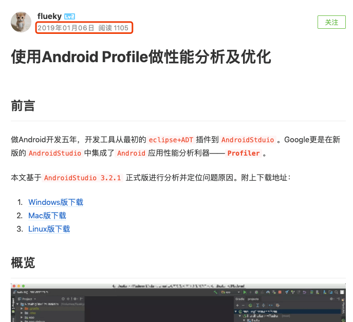
唯一的区别是，图中三个版本的 AndroidStudio 下载是超链接 。后面只当纯文本格式复制过来了。
特别受打击的是原创的阅读量只有 1105，而盗用的阅读量却有 2375。
1. 现状
很多程序猿在寻找问题的解决方法时，都喜欢 Google 而不是 Baidu 。Why ?!!!! 这一部分和我们自身有着极大的关系。见过最短的博客，只有一个标题和一个地址，该地址访问到原著的博客页面。见过最有良心的博客，告诉别人，此是转载，并附上原文连接。见过最没良心的博客，估计也就是我今天遇到的这位或公司吧。因此，在使用 Baidu 搜索时，出现的结果大同小异，使用 Google 搜索时，却介乎没有这样的情况。见下图对比：
Baidu 出的前 5 条结果中，红色标记的分别是我发布在 csdn 和 掘金 上面的的稳文章。蓝色标记是被抄袭的，而且两条记录都是同一人或公司所为（后面会给出证明）。抄袭的文章排第一条。
Google 出的前 5 条结果中，蓝色标记是我发布在 掘金 上面的，红标记是抄袭的文章。后面三条在内容上是跟搜索关键字相似度很大的文章。另外两条重复的文章，可能因为点击量不够，自动被忽略。而且原著的文章排第一位。
所以 Baidu ，如果不是祖国护着你，你凭什么主导着国内的搜索市场，而你又因此获益了多少广告费。（此处没说第一条记录是给了广告费，而 Baidu 广告费的事情是路人皆知。）当初决定自己写博客的主要原因就是受到这样的打击，因此，决定在我的博客主页中，没有一条转载、抄袭的文章，只有原创、翻译的文章。目前我做到了，请见 flueky 的 csdn 主页。
2. 一探究竟
4 年来所写的博客中，承认 拿得出手的文章没有几篇，难得有一篇文章获得如此的青睐，我也很欣慰。但是，你的做法让我痛恶至极。别人转载也是为了分享技术，能让优秀的文章更容易被 Baidu 到，同时还尊重原著。而你的做法却是为了做广告宣传的方式，用不属于你的文章充当自己的知识储备，这样合适么？
简书上的文章，已被删除。根据之前的截图，在文章末尾，你还分享了一个 QQ 群地址。
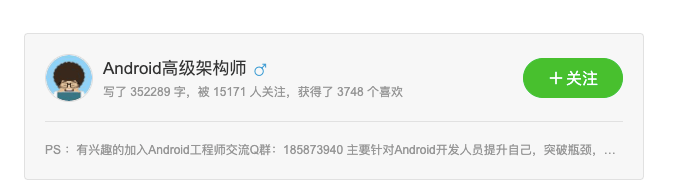名为 Android 技术交流群，群内有近 2000 人。群内可分为两种人，一种人，你或你们公司的人，一种人，通过搜索群号进群的人。涉及到技术交流，貌似跟你们没有多大关系吧？那些天真的萌新们，将自己遇到的问题分享在群里，如果运气好，碰到其他大神愿意解答，如果运气不好恐怕这个交流群也没什么用。如今真正的程序猿有几个不忙的？加班到猝死的案例屡见不鲜，他们会有空做技术答疑？那些萌新恐怕才是你们眼中的羊，时不时的放一点优惠活动，推广链接，总有几只羊着了你们的道。下面是加群时，管理员私发你的消息。
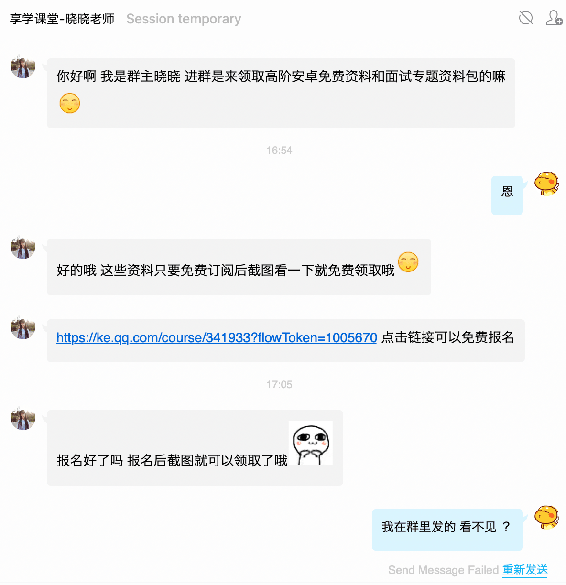安卓高阶资料，免费领取哟！！！，但是先得报名一个网络课程，免费哟！！！
这是报名的首页，最近在学 5768 人，累计报名 1万人，如果你点了免费报名，还注册了账号，那这数字会 +1 ，可能你注册账号时用的手机号也他们获取了。再看看课程内容，Java/Kotlin 进阶，Android性能调优、NDK、框架构建，微信小程序 、Hybrid开发，移动架构师，哇塞，内容很全面，你只要 20 个课程就可以完全学会哟 ，然后 就可以升职加薪、当上总经理、出任CEO、迎娶白富美、走上人生巅峰,想想是不是还有点小激动！
再看看讲师介绍 ，8 年Android开发项目经验，前阿里 P7 移动架构师。可怜的我毕业才 5 年多点。你们有这么多优秀、NB、大神级的人物还需要抄袭我那篇不入流的文章？
3. 何方神圣
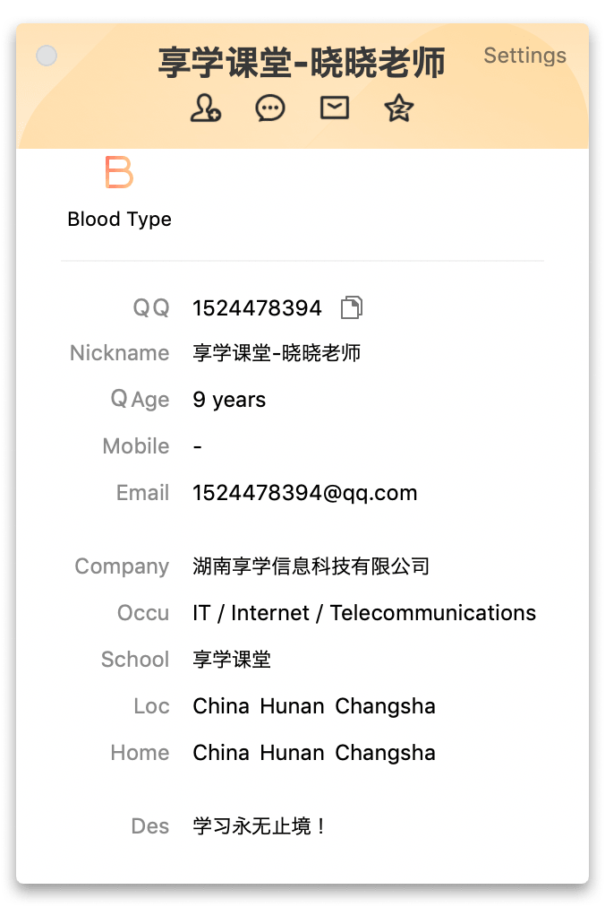通过管理员的 QQ 信息得知，你们所属 湖南享学信息科技有限公司 。学习永无止境，送你后半句，抄袭永不停歇。最后，基于百科提供的数据（此处应有真香表情）
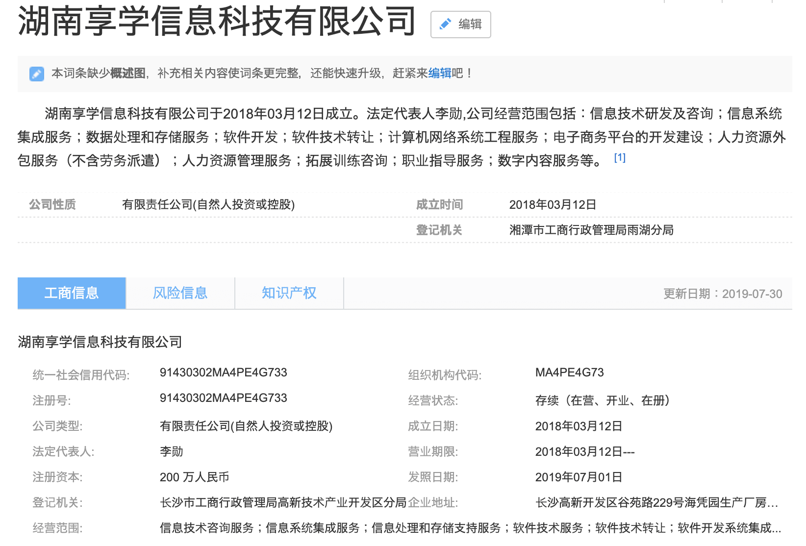若你是个人，碍于你的无知，此事我不追究。但见你是企业，且你的所做所为都以营利为目的，此事不当善罢甘休。因此有了下面与对方的对话。
最初的 QQ 号加完，被踢群了，因此无法继续私聊。于是换了一个小号添加。最初的想法是私公开道歉就好，对方不予理会，以为道歉就能完事。想着联系律师朋友起草一份律师函，发现在博客中并没有版权声明，也只能作罢。一再强调，如果还能在网上收到他们盗用的文章怎么办，结果斩钉截铁的说不会。毁尸灭迹也不知道彻底些。不然 Baidu 出的这两条记录，你当是 Baidu 的 bug ?
不知道这个算法网运营方是谁，但是根据文章底部超链接，还是很容易找到 QQ 群号。
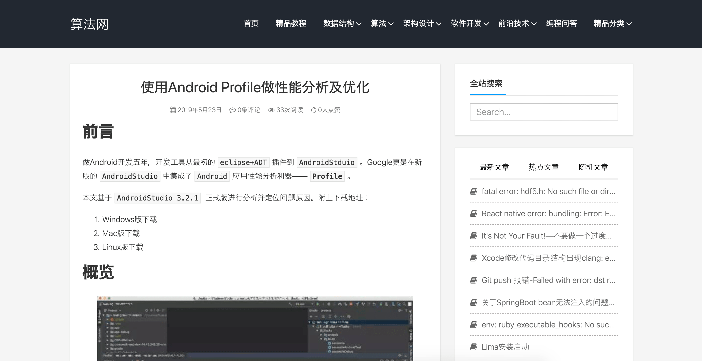 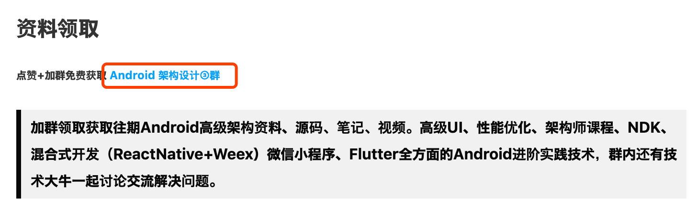 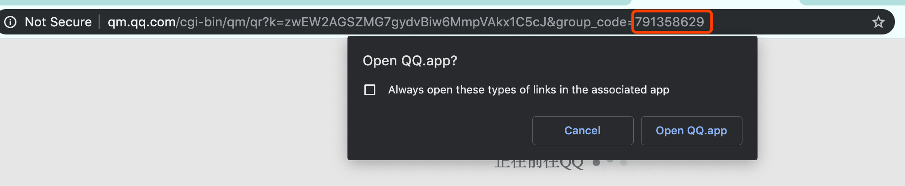最后在申请入群时，发现群主是同一人。
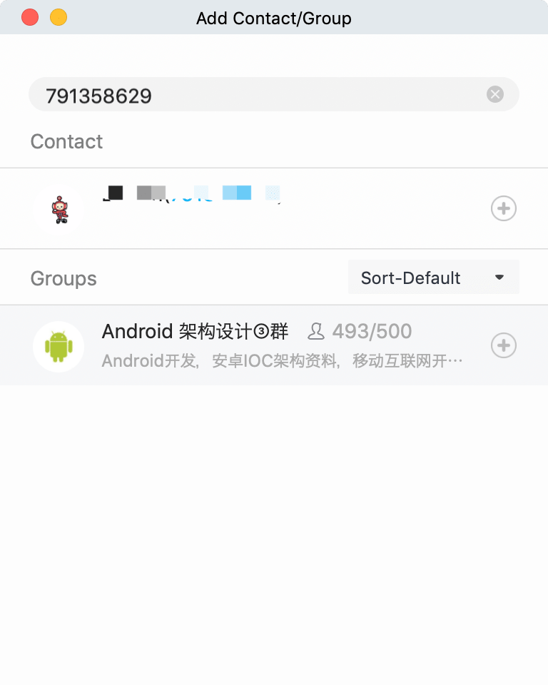 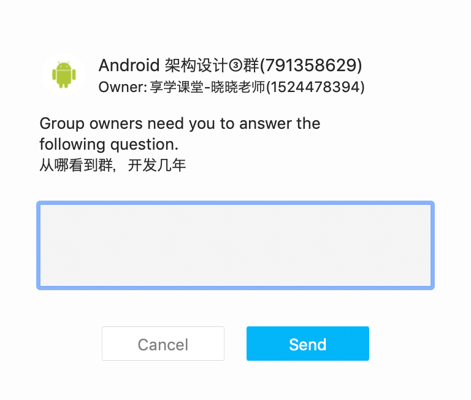4. 结束语
俗话说 ，得饶人处且饶人，我又何必如此小题大做。原本打算此事就此打住 ，冲入群中，吼几句，发泄完恼骚走人。结果没有道歉，反而被踢群。随着之后的深入调查研究，这是通过不正当的方式获取用户资源，借以做课程宣传，进而营利。与大街上，扫码领取赠品，以及公众号中添加微信免费领取资料的目的一样。但却通过盗用他人劳动成果这一不正当的方式，此事定不能善罢甘休。
最后，我不确定你课程中列举的那些讲师的资历是否属实。但是友情提醒，广告宣传中有一项罪名叫做虚假宣传，**是指在商业活动中经营者利用广告或其他方法对商品或者服务做出与实际内容不相符的虚假信息，导致客户或消费者误解的行为。违反诚实信用原则，违反公认的商业准则，是一种严重的不正当竞争行为(摘自百科，真香！)**。
附上 原文地址 https://juejin.im/post/5c31c33ff265da6110373395,有兴趣的小伙伴可以参阅下。
5. 后话
在发出文章的第二天，他们找到我。有如下对话：
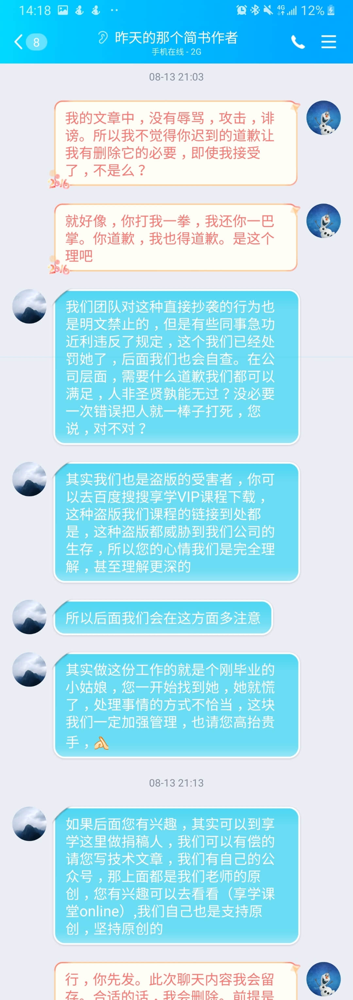用自己也是受害者博取同情，还让我投稿。扬言删除所有文章，只留一封道歉信。
谈妥，他发道歉信，我删除文章 。
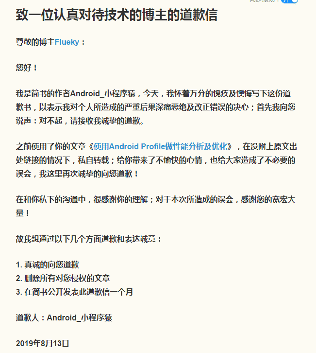道歉信中的猫腻，是改了简书用户名，并且连头像都改了。估计是怕之前的名字和头像容易被认出来。
最后心软了，也做了让步，没有等道歉信挂满一个月或 2000 阅读量就删除文章。而是在这篇文章达到 2000 阅读量就删除 。
万万没想到 ，一周后，当我再去打开道歉信的页面，发现已经删除。而这份道歉信在前三天的阅读量都不到 100 。
所以选择再次将这种恶心的事情曝光出来。人无信而不立，祝你们公司流芳千古，遗臭万年。
请不要再厚着脸皮联系我删除文章，这次绝不会心软，更不会手软。